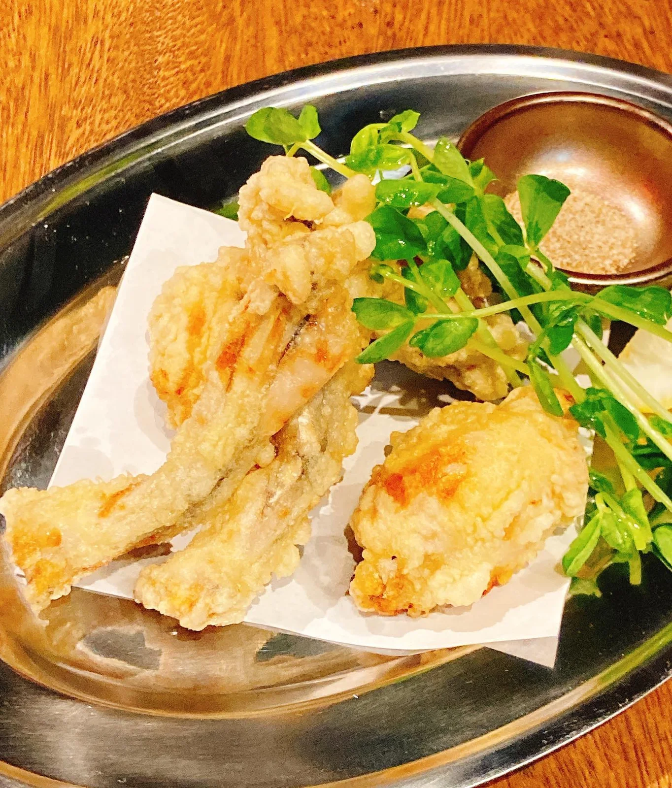

2020年12月16日
『9時にカエルの唐揚げ』

『9時にカエルの唐揚げ』 今日から発売です！！ 鶏肉の様な、魚の様な！ そして、当店も時短要請にしたがいます。ご不便をおかけしますが、何卒ご理解をよろしくお願いします🙇♂️ コロナ禍でも何か楽しい事はできないかと、考えております。 ⚪︎昼飲み ⚪︎昼飲みハッピーアワー ⚪︎お一人様忘年会 ⚪︎インスタライブ 決まり次第アップさせていただきます！ #カエル #カエルの唐揚げ #9時に帰る #時短要請 #カエル好きと繋がりたい #キンパル #中華バル#中華#中華料理#福島区グルメ#路地裏#B級グルメ#中国#チャイニーズ#路地裏チャイニーズ有馬#有馬#シュウマイ#餃子#点心#フォローミー#followme